대기환경기사 (2008-05-11 기출문제)
1과목: 대기오염 개론
1. 대기의 건조단열체감율과 국제적인 약속에 의한 중위도 지방을 기준으로 한 실제체감율인 표준체감율 사이의 관계를 대류권내에서 도식화 한 것으로 옳은 것은? (단, 건조단열체감율 ------, 표준체감율― 종축은 고도, 횡축은 온도를 나타낸다.)
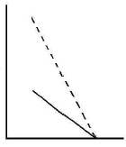
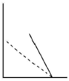
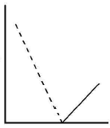
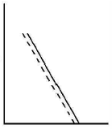
(정답률: 65%)

2. 입자상 오염물질 중 훈연(fume)에 관한 설영으로 가장 거리가 먼 것은?
- 금속 산화물과 같이 가스상 물질이 승화, 증류 및 화학반응 과정에서 응축될 때 주로 생성되는 고체입자이다.
- 20-50㎛ 정도의 크기가 대부분이다.
- 활발한 브라운 운동을 한다.
- 아연과 납산화물의 훈연은 고온에서 휘발된 금속의 산화와 응축과정에서 생성된다.
(정답률: 69%)
3. 다음 기온역전의 발생기전에 관한 설명으로 옳은 것은?
- 이류성 역전 - 따뜻한 공기가 차가운 지표면 위로 흘러갈 때 발생
- 침강형 역전 - 저기압 중심부분에서 기층이 서서히 참강할 때 발생
- 행풍형 역전 - 바다에서 더워진 바람이 차가운 육지위로 불 때 발생
- 전선형 역전 - 비교적 높은 고도에서 차가운 공기가 따뜻한 공기위로 전선을 이룰 때 발생
(정답률: 73%)
4. 다음 각종 환경관련 국제협약(조약)에 관한 주요 내용으로 틀린 것은?
- 몬트리올의정서: 오존층 파괴물질인 염화불화탄소의 생산과 사용규제를 위한 협약
- 바젤협약: 폐기물의 해양투기로 인한 해양오염을 방지하기 위한 협약.
- 람사협약: 자연자원의 보전과 현명한 이용을 위한 습지보전 협약
- CITES: 멸종위기에 처한 야생동식물의 보호를 위한 협약
(정답률: 82%)
5. 다음 중 오존 파괴지수(ODP)가 가장 큰 것은?
- CFC-114
- HCFC-22
- CCl4
- Halon-1301
(정답률: 74%)
6. 다음은 주요 배출오염물질과 관련 업종을 나타낸 것이다. ( )안에 가장 알맞은 것은?
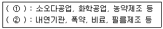
- ① NH3, ② HF
- ① NH3, ② NOx
- ① Cl2, ② HF
- ① Cl, ② NOx
(정답률: 65%)
7. 대기 중의 오염물질이 식물에 미치는 영향에 관한 설명으로 가장 적합한 것은?
- 불화수소는 식물의 잎을 주로 갈색으로 변색시킨다.
- 옥시던트는 인체에는 영향을 주지만 식물에 대한 영향은 거의 없다.
- 황산화물은 식물의 성장에 영향을 주지만 잎을 변색시키지는 않는다..
- 아세틸렌은 식물에 미치는 영향이 아주 약하고, 100ppm정도에서 주로 어린 잎에 영향을 준다.
(정답률: 74%)
8. 유효높이(H)가 60m인 굴뚝으로부터 SO2가 125g/s의 속도로 배출되고 있다. 굴뚝높이에서의 풍속은 6m/s이고 풍하거리 500m에서 대기안정 조건에 따라 편차 δy는 36m, δz는 18.5m이었다. 이 굴뚝으로부터 풍하거리 500m의 중심선상의 지표면 농도는? (단, 가우시안모델식을 사용하고, SO2는 배출되는 동안에 화학적으로 반응하지 않는다고 가정한다.)
- 약 52 ㎍/m3
- 약 66 ㎍/m3
- 약 2483 ㎍/m3
- 약 9957 ㎍/m3
(정답률: 54%)
9. Fick의 확산방정식을 실제 대기에 적용시키기 위해 추가하는 가정으로 거리가 먼 것은?
- 바람에 의한 오염물질의 주 이동방향은 X축이다.
- 하류로의 확산은 오염물이 바람에 의하여 X축을 따라 이동하는 것보다 강하다.
- 과정은 안정상태이고, 풍속은 x, y, z 좌표 시스템내의 어느 점에서든 일정하다.
- 오염물은 점오염원으로부터 계속적으로 방출된다.
(정답률: 82%)
10. 지상에서 NOx를 3g/s로 배출하고 있는 굴뚝 없는 쓰레기 소각장에서 풍하방향으로 3km 떨어진 곳에서의 중심축상 NOx의 지표면에서의 오염농도는 얼마인가? (단, 가우시안모델식을 사용하고, 풍속은 7m/s, δy= 190m, δz=65m 이며, NOx는 배출되는 동안에 화학적으로 반응하지 않는 것으로 가정한다.)
- 2.2×10-5g/m3
- 1.1×10-5g/m3
- 5.5×10-6g/m3
- 2.75×10-6g/m3
(정답률: 알수없음)
11. 다이옥신에 관한 설명으로 거리가 먼 것은?
- 독성이 가장 강한 것으로 알려진 2, 3, 7, 9 - PCDD의 독성잠재력을 1로 보고, 다른 이성질체에 대해서는 상대적인 독성등가인자를 사용하여 주로 표시한다.
- 다이옥신은 산소원자가 2개인 PCDD와 산소원자가 1개인 PCDF를 통칭하는 용어이다.
- 다이옥신은 전구물질의 연소 뿐만 아니라, 유기화합물과 염소화합물이 고온에서 연소하여서도 생성된다.
- 증기압과 수용성은 낮으나, 벤젠 등에는 용해되는 지용성으로 토양 등에 흡수될 수 있다.
(정답률: 73%)
12. 가우시안(Gaussian)모델에서의 표준편차(δy, δz)에 관한 설명으로 가장 거리가 먼 것은?
- δy, δz 값의 성립조건으로 시료채취기간은 약 10분이다.
- δy, δz 값은 대기의 안정상태와 풍하거리 X의 함수이다.
- δy, δz는 평탄한 지형에 기준을 두고 있다.
- δy, δz는 고도와 관계없이 일정한 값을 가지며, 일반적으로 수평대기 중에서 수 m에서 수백 m 이내로 국한된다.
(정답률: 72%)
13. 유해가스상 물질의 독성에 관한 설명으로 거리가 먼 것은?
- SO2는 0.1-1ppm에서도 수시간 내에 고등식물에게 피해를 준다.
- CO2독성은 10ppm 정도에서 인체와 식물에 해롭다.
- CO는 100ppm까지는 1-3주간 노출되어도 고등동물에 대한 피해는 약하다.
- HCl은 SO2 보다 식물에 미치는 영향이 훨씬 적으며, 한계농도는 10ppm에서 수시간 정도이다.
(정답률: 67%)
14. 지상 10m 에서의 풍속이 7.5m/s라면 지상 100m 에서의 풍속은? (단, Deacon 식을 적용, 풍속지수(P)= 0.12)
- 약 8.2m/s
- 약 8.9m/s
- 약 9.2m/s
- 약 9.9m/s
(정답률: 84%)
15. 다음 중 대기의 가시도에 관련된 용어가 아닌 것은?
- Extinction Coefficient
- Coefficient of Haze
- Complex Index of Refraction
- Merck Index
(정답률: 47%)
16. 질소산화물(NOx)의 특성으로 거리가 먼 것은?
- NOx는 혈중 헤모글로빈과 결합하여 메트헤모글로빈을 형성함으로써 산소전달을 방해한다.
- NO는 혈중 헤모글로빈과의 결합력이 CO보다 수백배 더 강하고, NO2는 NO보다 독성이 5배 정도 강하다.
- NO2의 급성피해는 자극성 가스로서 눈과 코를 강하게 자극하고, 기관지염, 폐기종, 폐렴 등을 일으킨다.
- NO2의 농도가 약 5㎍/m3가 되면 인체에는 수주 내에 만성피해 현상이 나타난다.
(정답률: 57%)
17. 서울을 포함한 대도시에서 하절기에 지표면 부근의 오존농도가 증가하고 있는데, 이 지표 오존농도의 저감 대책으로 가장 거리가 먼 것은?
- 염화불화탄소(CFCs)의 사용을 규제
- 차량의 배출허용기준을 강화
- 배연탈질설비의 설치
- 연소 및 소각조건의 개선
(정답률: 65%)
18. 먼지입자의 크기에 관한 설명으로 옳지 않은 것은?
- 공기역학적 직경이 대상 입자상 물질의 밀도를 고려한데 반해, 스토크스 직경은 단위밀도(1g/cm3)를 갖는 구형입자로 가정하는 것이 두 개념의 차이점이다.
- 스토크스 직경은 알고자 하는 입자상 물질과 같은 밀도 및 침강속도를 갖는 입자상 물질의 직경을 말한다.
- 공기역학적 직경은 먼지의 호흡기 침착, 공기정화기의 성능조사 등 입자의 특성파악에 주로 이용된다.
- 공기중 먼지 입자의 밀도가 1g/cm3보다 크고, 구형에 가까운 입자의 공기역학적 직경은 실제 직경보다 항상 크다.
(정답률: 93%)
19. 온위(Potential Temperature)에 관한 설명으로 옳지 않은 것은?
- 온위는 온도와 압력의 특수한 대기조합이 연관된 건조단열을 정의하는 한 방법이다.
- 온위
 로 나타낼 수 있으며, 여기서 P는 millibar, T는 K단위로 표시된다.
로 나타낼 수 있으며, 여기서 P는 millibar, T는 K단위로 표시된다. - 밀도는 온위에 비례한다.
- 높이에 따라 온위가 감소하면 대기는 불안정하고, 증가하면 대기는 안정하다.
(정답률: 62%)
20. 복사에 관한 다음 설명 중 거리가 먼 것은?
- 대기 중에서의 복사는 보통 0.1-100㎛ 파장영역에 속한다.
- 복사는 전자기장의 진동에 의한 파동 형태의 에너지 전달이다.
- 대기 복사파장 영역 중 인간이 느낄 수 있는 가시광선은 붉은색인 0.36㎛ - 보라색인 0.75㎛ 까지이다.
- 복사는 진공상태인 우주공간에서도 열을 전달할 수 있다.
(정답률: 50%)
2과목: 연소공학
21. 연소학에서 주로 사용되는 무차원수 중 온도의 확산속도에 대한 물질의 확산속도의 비를 의미하는 것은?
- Pr (Prantle number)
- Nu (Nusselt number)
- Le ( Lewis number)
- Gr ( Grashof number)
(정답률: 40%)
22. 순수한 탄소 1Nm3 가 완전연소해서 배출되는 (CO2)max는?
- 약 12.0％
- 약 17.5%
- 약 21.0%
- 약 37.5%
(정답률: 77%)
23. S함량 3%의 B-C유 200kL를 사용하는 보일러에 S함량 1%인 B-C유를 50% 섞어서 사용하면 SO2의 배출량은 몇% 감소하겠는가? (단, 기타 연소조건은 동일하며, S는 연소시 전량 SO2로 변환되고, B-C유 비중은 0.95(S함량에 무관))
- 약 26%
- 약 33%
- 약 44%
- 약 48%
(정답률: 86%)
24. 석탄의 탄화도 증가에 따른 특성으로 가장 거리가 먼 것은?
- 연소속도가 커진다.
- 수분 및 휘발분이 감소한다.
- 산소의 양이 줄어든다.
- 발열량이 증가한다.
(정답률: 63%)
25. 발열량에 관한 설명으로 옳지 않은 것은?
- 단위질량의 연료가 완전연소 후, 처음의 온도까지 냉각될 때 발생하는 열량을 말한다.
- 일반적으로 수증기의 증발잠열은 이용이 잘 안되기 때문에 저의 발열량이 주로 사용된다.
- 측정위치에 따라 고위 발열량과 저위 발열량으로 구분된다.
- 고체연료의 경우 kcal/kg, 기체연료의 경우 kcal/Sm3의 단위를 사용한다.
(정답률: 65%)
26. 석탄ㆍ석유 혼합연료(COM)에 관한 설명으로 가장 적합한 것은?
- 중유에다 거의 같은 질량의 미분탄을 섞어서 고체화시킨 연료이다.
- 열량비로는 COM 중의 석탄의 비율은 5% 정도로 석유비율이 큰 편이다.
- 별도의 중유전용 연소시설을 이용하지 않는 것이 큰 장점이다.
- 유해성분을 포함하고 있으므로 재와 매연처리, 연소가스의 연소실 내 체류시간을 미분탄 정도로 고려할 필요가 있다.
(정답률: 54%)
27. C: 80%, H: 20%인 액체연료를 1kg/min로 연소시킬 때 배기가스 성분이 CO2: 15%, O2: 5%, N2: 80% 였다면, 실제 공급된 공기량(Sm3/hr)은?
- 약 770 Sm3/h
- 약 820 Sm3/h
- 약 980 Sm3/h
- 약 995 Sm3/h
(정답률: 70%)
28. 확산형 가스버너 중 포트형에 관한 설명으로 가장 거리가 먼 것은?
- 버너 자체가 로벽과 함께 내화벽돌로 조립되어 로 내부에 개구된 것이며, 가스와 공기를 함께 가열할 수 있는 이점이 있다.
- 고발열량 탄화수소를 사용할 경우에는 가스압력을 이용하여 노즐로부터 고속으로 분출하게 하여 그 힘으로 공기를 흡인하는 방식을 취한다.
- 밀도가 큰 공기 출구는 상부에, 밀도가 작은 가스 출구는 하부에 배치되도록 한다.
- 구조상 가스와 공기압이 높은 경우에 사용한다.
(정답률: 39%)
29. 연소공정에서 과잉공기량의 공급이 많을 경우 발생하는 현상으로 거리가 먼 것은?
- 연소실의 온도가 낮게 유지된다.
- 배출가스에 의한 열손실이 증대된다.
- 황산화물에 의한 전열면의 부식을 가중시킨다.
- 매연발생이 많아진다.
(정답률: 71%)
30. 프로판 1Sm3을 공기비 1.2로 완전 연소시킬 경우, 발생되는 건조연소가스량(Sm3)은?
- 26.9
- 31.4
- 38.9
- 43.7
(정답률: 60%)
31. 질소산화물(NOx)생성 특성에 관한 설명으로 가장 거리가 먼 것은?
- 일반적으로 동일 발열량을 기준으로 NOx 배출량은 석탄＞오일＞가스 순이다.
- 연료 NOx는 주로 질소성분을 함유하는 연료의 연소과정에서 생성된다.
- 천연가스에는 질소성분이 거의 없으므로 연료의 NOx 생성은 무시할 수 있다.
- 고정오염원에서 배출되는 질소산화물은 주로 NO2이며, 소량의 NO를 함유한다.
(정답률: 58%)
32. 시간당 1ton의 석탄을 연소시킬 때 발생하는 SO2는 0.31Nm3/min 였다. 이 석탄의 황 함유량(%)은? (단, 표준상태를 기준으로 하고, 석탄 중의 황성분은 연소하여 전량 SO2가 된다.)(문제오류로 정답은 1번입니다.)
- 복원중 (정확한 보기내용을 아시는분께서는 오류 신고를 통하여 보기 내용 작성 부탁드립니다.)
- 복원중 (정확한 보기내용을 아시는분께서는 오류 신고를 통하여 보기 내용 작성 부탁드립니다.)
- 복원중 (정확한 보기내용을 아시는분께서는 오류 신고를 통하여 보기 내용 작성 부탁드립니다.)
- 복원중 (정확한 보기내용을 아시는분께서는 오류 신고를 통하여 보기 내용 작성 부탁드립니다.)
(정답률: 59%)
33. 유동층 연소로의 특성과 거리가 먼 것은?
- 유동층을 형성하는 분체와 공기와의 접촉면적이 크다.
- 격심한 입자의 운동으로 층내가 균일 온도로 유지된다.
- 수명이 긴 char는 연소가 완료되지 않고 배출될 수 있으므로 재연소장치에서의 연소가 필요하다.
- 부하변동에 따른 적응력이 높다.
(정답률: 84%)
34. 다음 회분 성분 중 백색에 가깝고 융점이 높은 것은?
- CaO
- SiO2
- MgO
- K2O
(정답률: 79%)
35. NH3를 제조하는 작업장(10m×100m×10m)에서 NH3 10kg이 누출되어 전 작업장 내로 확산되었다. 이 때 송풍능력 100m3/min 송풍기를 사용하여 허용농도로 환기시키는데 소요되는 시간은? (단, -d[A]/dt = K[A], NH3 허용농도 25ppm, 표준상태 기준)
- 약 4 시간
- 약 7 시간
- 약 10 시간
- 약 12 시간
(정답률: 54%)
36. 다음 중 가솔린자동차에 적용되는 삼원촉매기술과 관련된 오염물질과 거리가 먼 것은?
- SOx
- NOx
- CO
- HC
(정답률: 77%)
37. 메탄올 1.5kg을 완전연소하는데 필요한 이론공기량(Sm3/kg)?
- 4.5Sm3/kg
- 5.0Sm3/kg
- 7.5Sm3/kg
- 9.0Sm3/kg
(정답률: 75%)
38. 연소 시 매연 발생량이 가장 적은 탄화수소는?
- 나프텐계
- 올리핀계
- 방향족계
- 파라핀계
(정답률: 47%)
39. 다음은 유류연소버너에 관한 설명이다. 가장 적합한 것은?
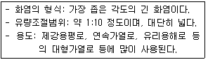
- 유압식 버너
- 회전식 버너
- 고압공기식 버너
- 저압공기식 버너
(정답률: 69%)
40. 다음 중 기체연료의 연소방식에 해당되는 것은?
- 스토커 연소
- 회전식버너 연소
- 예혼합 연소
- 유동층 연소
(정답률: 64%)
3과목: 대기오염 방지기술
41. 먼지농도 44g/Sm3의 함진가스를 정상운전조건에서 92%로 처리하는 싸이클론이 있다. 이 때 처리가스의 10%에 해당하는 외부공기가 유입될 때 먼지통과율이 외부공기 유입이 없는 정상운전 시의 2배에 달한다고 한다면, 출구가스 중의 먼지농도는?
- 5.1g/Sm3
- 5.8g/Sm3
- 6.4g/Sm3
- 7.1g/Sm3
(정답률: 48%)
42. 배출가스 내의 NOx 제거방법 중 환원제를 사용하는 접촉환원법에 관한 설명으로 가장 거리가 먼 것은?
- 선택적 환원제로는 NH3, H2S 등이 있다.
- 선택적인 접촉환원법에서 Al2O3계의 촉매는 SO2, SO3, O2 와 반응하여 황산염이 되기 쉽고, 촉매의 활성이 저하된다.
- 선택적인 접촉환원법은 과잉의 산소를 먼저 소모한 후 첨가된 반응물인 질소산화물을 선택적으로 환원시킨다.
- 비선택적 접촉환원법의 촉매로는 Pt 뿐만 아니라, Co, Ni, Cu, Cr 등의 산화물도 이용 가능하다.
(정답률: 65%)
43. 가스 중의 불화수소를 수산화나트륨 용액과 향류로 접촉시켜 75% 흡수시키는 충전탑의 흡수율을 99.9%로 향상시키려면 충전탑의 높이는? (단, 흡수액 상의 불화수소의 평형분압은 0 으로 가정)
- 약 3배 높아져야 한다.
- 약 5배 높아져야 한다.
- 약 9배 높아져야 한다.
- 약 13배 높아져야 한다.
(정답률: 75%)
44. 후드의 유입계수가 0.82, 속도압이 20mmH2O일 때 후드의 압력손실은? (단,
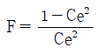
이용)- 6.5mmH2O
- 8.1mmH2O
- 8.4mmH2O
- 9.7mmH2O
(정답률: 70%)
45. 석탄화력발전소에서 120m3/min의 배출가스를 전기집진기로 처리한다. 입자이동 속도가 15cm/sec일 때, 이 집진기의 효율이 99.0%가 되려면 집진극의 면적은? (단, Deutsch-Anderson 식 적용)
- 약 47m2
- 약 54m2
- 약 61m2
- 약 72m2
(정답률: 50%)
46. 다음 흡수장치 중 액가스비가 가장 크고, 수량이 많아 동력비가 많이 들며, 가스량이 많을 때는 불리한 흡수장치는?
- 충전탑
- 스프레이 탑
- 제트 스크러버
- 벤츄리 스크러버
(정답률: 58%)
47. 냄새물질의 화학구조에 대한 설명으로 가장 거리가 먼 것은?
- 골격이 되는 탄소수는 저분자일수록 관능기 특유의 냄새가 강하고 자극적이나 8 - 13에서 가장 향기가 강하다.
- 불포화도(2중결합 및 3중결합의 수)가 높으면 냄새가 보다 강하게 난다.
- 분자 내 수산기의 수가 증가할수록 냄새가 강하다.
- 락톤 및 케톤화합물은 환상이 크게 되면 냄새가 강해진다.
(정답률: 87%)
48. 세정집진장치의 입자 포집원리에 대한 설명으로 가장 거리가 먼 것은?
- 액적에 입자가 충돌하여 부착한다.
- 미립자 확산으로 입자가 쉽게 액적과 접촉한다.
- 배기 증습에 의하여 입자가 서로 응집한다.
- 입자를 핵으로 한 증기의 증발에 따라 응집성을 촉진시킨다.
(정답률: 53%)
49. 전기집진장치에서 입자의 저항이 1012 - 1013Ω-cm 범위에서 일어나는 현상으로 가장 적합한 것은?
- 포집먼지의 중화가 적당한 속도로 일어나 포집효율이 현저히 높아진다.
- 스파크 발생은 없으나 절연파괴를 일으킨다.
- 대전입자의 중화가 빠르고 포집된 먼지가 재비산된다.
- 집진극으로부터 음극코로나가 발생하게 되고, 집진율이 떨어진다.
(정답률: 47%)
50. 다음 중 확산력과 관성력을 주로 이용하는 집진장치로 가장 적합한 것은?
- 중력집진장치
- 전기집진장치
- 원심력집진장치
- 세정집진장치
(정답률: 64%)
51. 습식전기집진장치의 특징에 관한 설명 중 틀린 것은?
- 작은 전기저항에 의해 생기는 먼지의 재비산을 방지할 수 있다.
- 집진면이 청결하여 높은 전계 강도를 얻을 수 있다.
- 건식에 비하여 가스의 처리속도를 2배 정도 크게 할 수 있다.
- 고저항의 먼지로 인한 역전리 현상이 일어나기 쉽다.
(정답률: 77%)
52. 여과집진장치의 탈진방식 중 간헐식에 관한 설명으로 틀린 것은?
- 간헐식 중 진동형은 여포의 음파진동, 횡진동, 상하진동에 의해 포집된 먼지층을 털어내는 방식으로 접착성 먼지의 집진에는 사용할 수 없다.
- 집진실을 여러 개 방으로 구분하고 방 하나씩 처리가스의 흐름을 차단하여 순차적으로 탈진하는 방식이며, 여포의 수명은 연식식에 비해 길다.
- 간헐식 중 역기류형의 적정 여과속도는 3 - 5cm/s 이고, glass fiber는 역기류형 중 가장 저항력이 강하다.
- 연속식에 비하여 먼지의 재비산이 적고, 높은 집진율을 얻을 수 있다.
(정답률: 75%)
53. 다이옥신의 처리대책으로 가장 거리가 먼 것은?
- 촉매분해법: 촉매로는 금속 산화물(V2O5, TiO2 등), 귀금속(Pt, Pd)이 사용된다.
- 광분해법: 자외선파장(250 - 340nm)이 가장 효과적인 것으로 알려져 있다.
- 열분해방법: 산소가 아주 적은 환원성 분위기에서 탈염소화, 수소첨가반응 등에 의해 분해시킨다.
- 오존분해법: 수중 분해시 순수의 경우는 산성일수록, 온도는 20℃ 전후에서 분해속도가 커지는 것으로 알려져 있다.
(정답률: 67%)
54. 유해가스의 흡수장치 중 다공판탑(가스분사형)에 관한 설명으로 옳지 않은 것은?
- 판 간격은 40cm, 액가스비는 0.3 - 5L/m3 정도이다.
- 비교적 소량의 액량으로 처리가 가능하다.
- 효율은 높지만 고체 부유물을 생성하는 경우에는 부적합하다.
- 판수를 증가시키면 고농도 가스 처리도 가능하다.
(정답률: 46%)
55. 여과집진장치 “직경이 0.1㎛ 이하인 미세입자“의 주요 메카니즘으로 가장 적합한 집진원리는?
- 관성충돌
- 세정응축
- 중력침강
- 확산
(정답률: 82%)
56. 커닝험 보정계수에 대한 설명으로 가장 적합한 것은? (단, 커닝험 보정계수가 1 이상인 경우)
- 미세입자일수록 가스의 점성저항이 작아지므로 커닝험 보정계수가 작아진다.
- 미세입자일수록 가스의 점성저항이 커지므로 커닝험 보정계수가 작아진다.
- 미세입자일수록 가스의 점성저항이 커지므로 커닝험 보정계수가 커진다.
- 미세입자일수록 가스의 점성저항이 작아지므로 커닝험 보정계수가 커진다.
(정답률: 62%)
57. 공기동역학적 직경(Aerodynamic Diameter)에 관한 설명으로 가장 거리가 먼 것은?
- 실제 대기오염 분야에서는 주로 공기동역학적 직경을 사용하여 입자의 크기를 나타낸다.
- 입자의 크기가 밀도에 따라 다르기 때문에 입자의 밀도를 고려하여야 하는 문제점이 있다.
- 공기동역학적 직영을 알고 있다면 입자의 광학적 크기, 형상계수 등의 물리적 변수는 크게 중요하지 않다.
- Stokes 직경과 달리 입자의 밀도를 1g/cm3으로 가정함으로써 보다 쉽게 입경을 나타낼 수 있다.
(정답률: 47%)
58. 다음 세정집진장치 중 입구유속(기본유속)이 가장 빠른 것은?
- Jet Scrubber
- Venturi Scrubber
- Theisen Washer
- Cyclone Scrubber
(정답률: 65%)
59. 3개의 집진실로 구성된 여과집진기의 총 여과시간이 55분이고, 단위 집진실의 탈진시간이 5분이라면, 단위 집진실의 운전시간은?
- 15분
- 20분
- 30분
- 45분
(정답률: 80%)
60. 다음 흡착제의 재생 방법으로 가장 거리가 먼 것은?
- 수증기를 불어 넣는다.
- 압력을 가하여 피흡착질을 탈착시킨다.
- 물로 세척한다.
- 고온의 불활성 기체를 가한다.
(정답률: 40%)
4과목: 대기오염 공정시험기준(방법)
61. 굴뚝 배출가스 중 가스상 물질의 시료채취장치에 관한 설명으로 가장 거리가 먼 것은?
- 습식 가스미터를 운반할 때에는 반드시 물을 뺀다.
- 가스미터는 100mmH2O 이내에서 사용한다.
- 가스미터는 정밀도를 유지하기 위하여 기차를 측정해 둘 필요가 있다.
- 시료가스량 측정을 위하여 쓰는 채취병은 미리 20℃때의 참부피를 구해둔다.
(정답률: 62%)
62. 원통여지의 포집기를 사용하여 배출가스 중의 먼지를 포집하였다. 측정 결과가 다음과 같을 때, 먼지농도(mg/Sm3)?
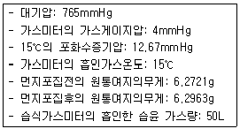
- 약 386 mg/Sm
- 약 436mg/Sm
- 약 513mg/Sm
- 약 558mg/Sm
(정답률: 30%)
63. 환경대기중 질소산화물의 측정방법 중 화학발광법에 관한 설명으로 가장 거리가 먼 것은?
- n-(1-Naphthy 1) Ethylene Diamine 2염산염, Sulfanilic acid 및 초산 혼합액의 일정유량의 시료대기를 일정기간 통과시켜서 이산화질소를 흡수시켜 생성된 발광광도로부터 이산화질소농도를 연속적으로 측정한다.
- 시료 대기중의 일산화질소가 오존과의 반응에 의해 이산화질소로 생성될 때 생기는 화학발광광도가 일산화질소농도와 비례관계가 있는 것을 이용해서 시료 대기중에 포함되는 일산화질소 농도를 측정한다.
- 시료 대기중의 이산화질소를 콘버어터를 통하여 일산화질소로 변환시킨 후 일산화질소의 측정과 같은 방법으로 측정하여 질소산화물에서 일산화질소를 뺀 값이 이산화질소가 된다.
- 질소산화물의 자동연속측정방법에 해당된다.
(정답률: 53%)
64. 대기오염공정시험방법상 원자흡수분광광도법(원자흡광광도법)과 자외선 가시선 분광법(흡광광도법)을 동시에 적용할 수 없는 것은?
- 카드뮴화합물
- 니켈화합물
- 페놀화합물
- 구리화합물
(정답률: 70%)
65. 굴뚝 배출가스 중에 포함된 알데히드 및 케톤화합물의 분석방법으로 거리가 먼 것은?
- 액체크로마토그래프법
- 크로모트로핀산법
- 나프틸에틸렌디아민법
- 아세틸아세톤법
(정답률: 55%)
66. 굴뚝 배출가스 중 벤젠을 분석하고자 할 때 채취관 및 도관의 재질로 알맞지 않은 것은?
- 경질유리
- 석영
- 불소수지
- 보통강철
(정답률: 60%)
67. 비분산 적외선 분석법에서 사용하는 주요 용어의 의미로 틀린 것은?
- 비교가스: 시료셀에서 적외선 흡수를 측정하는 경우 대조가스로 사용하는 것으로 적외선을 흡수하지 않는 가스
- 스팬 드리프트(Span Drift): 계기의 눈금스팬에 대응하는 지시치의 일정 기간내의 변동
- 스팬가스(Span Gas): 분석계의 최저 눈금값을 교정하기 위하여 사용하는 가스
- 정필터형: 측정성분이 흡수되는 적외선을 그 흡수파장에서 측정하는 방식
(정답률: 알수없음)
68. 가스크로마토그래프의 장치구성에 관한 설명으로 가장 거리가 먼 것은?
- 방사성 동위원소를 사용하는 검출기를 수용하는 검출기오븐에 대하여는 온도조절기구와는 별도로 독립작용할 수 있는 과열방지기구를 설치해야 한다.
- 분리관오븐의 온도조절 정밀도는 ±0.5℃ 범위이내 전원 전압변동 10%에 대하여 온도변화 ±0.5℃ 범위이내(오븐의 온도가 150℃ 부근일 때)이어야 한다.
- 기록계는 스트립 차아트식 수직기록계로 스팬전압 1mV, 스펜 응답시간 5초 이내, 기록지 이동속도는 5mm/분을 포함한 다단변속이 가능한 것이어야 한다.
- 수소염 이온화 검출기(FID)에서는 직렬고저항치, 기록계 스팬전압 또는 기록계 전체눈금에 대한 이온전류치, 기록지 이동속도를 설정, 판독 또는 측정할 수 있는 것이어야 한다.
(정답률: 75%)
69. 다음은 굴뚝 배출가스 중의 산소측정방식에 관한 설명이다. 가장 적합한 것은?
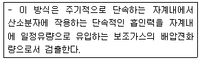
- 질코니아 방식
- 담벨형 방식
- 압력검출형 방식
- 전극 방식
(정답률: 74%)
70. 환경대기 중의 석면 측정방법에 관한 설명으로 가장 거리가 먼 것은?
- 석면먼지의 농도표시는 표준상태의 기체 1mL 중에 함유된 석면섬유의 개수로 표시한다.
- 멤브레인 필터는 셀룰로오스 에스테르를 원료로 한 얇은 다공성의 막으로, 구멍의 지름은 평균 0.01 - 10㎛ 이다.
- 위상차현미경을 사용하여 섬유상으로 보이는 입자를 계수하고 같은 입자를 보통의 생물현미경으로 바꾸어 계수하여, 그 계수치들의 차를 구하면 굴절율이 거의 1.5인 섬유상의 입자를 계수할 수 있다.
- 위상차현미경이란, 두께가 동일한 무색 투명한 물체의 각 부분의 입사광 사이에 생기는 명암차를 화상면에서 위상차로 바꾸어, 구조를 보기 쉽도록 한 현미경이다.
(정답률: 50%)
71. 굴뚝 배출가스 중의 염화수소 분석방법으로 거리가 먼 것은?
- 질산은 적정법
- 이온크로마토그래프법
- 이온전극법
- 가스크로마토그래프법
(정답률: 43%)
72. 굴뚝연속자동측정기 설치방법으로 틀린 것은?
- 수직굴뚝에서 가스상 물질의 측정위치는 굴뚝하부 끝에서 위를 향하여 굴뚝내경의 1/2배 이상이 되는 지점으로 한다.
- 수직굴뚝에서 가스상 물질의 측정위치는 굴뚝상부 끝단으로부터 아래를 향하여 굴뚝 상부내경의 1/2배 이상이 되는 지점으로 한다.
- 수평굴뚝에서 가스상 물질의 측정위치는 굴뚝방향이 바뀌는 지점으로부터 굴뚝내경의 2배 이상 떨어진 곳을 선정한다.
- 먼지와 가스상물질 모두 측정하는 경우 측정위치는 먼지를 따른다.
(정답률: 46%)
73. 특정발생원에서 일정한 굴뚝을 거치지 않고 외부로 비산되는 먼지를 하이볼륨에어샘플러로 측정한 결과 다음과 같은 자료를 얻었다. 이 때 비산먼지의 농도는 몇 mg/m3인가?
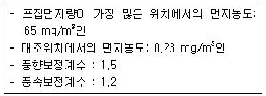
- 87
- 94
- 102
- 117
(정답률: 53%)
74. 다음은 가스크로마토그래피에 사용되는 검출기에 관한 설명이다. ( )안에 가장 적합한 것은?
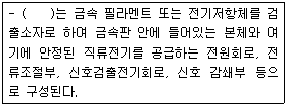
- Flame Ionization Detector
- Electron Capture Detector
- Thermal Conductivity Detector
- Flame Photometric Detector
(정답률: 80%)
75. 환경대기 중 아황산가스를 파라로자닐린법으로 분석할 때 다음 방해물질에 대한 제거방법으로 옳은 것은?
- NOx: 측정기간을 늦춘다.
- Mn, Fe, Cr: EDTA 및 인산을 사용한다.
- O3: 술파민산을 사용한다.
- 암모니아: pH를 4.5 이하로 조절한다.
(정답률: 82%)
76. 굴뚝 배출가스 중의 황화수소 분석방법에 대한 설명으로 옳은 것은?
- 오르토 톨리딘을 함유하는 흡수액에 황화수소를 통과시켜 얻어지는 발색액의 흡광도를 측정한다.
- 시료중의 황화수소를 아연아민착염 용액에 흡수시켜 P-아미노디메틸아닐린 용액과 염화제이철 용액을 가하여 생성되는 메틸렌블루우의 흡광도를 측정한다.
- 디에틸아민동 용액에 황화수소 가스를 흡수시켜 생성된 디에틸디티오카바민산동의 흡광도를 측정한다.
- 황화수소 흡수액을 일정량으로 묽게 한 다음 완충액을 가하여 pH를 조절하고, 란탄과 알리자린 콤플렉숀을 가하여 얻어지는 발색액의 흡광도를 측정한다.
(정답률: 50%)
77. 굴뚝 배출가스 중의 질소산화물을 페놀디슬폰산법으로 측정하는 방법에 관한 설명으로 틀린 것은?
- 시료중의 질소산화물을 산화흡수제(황산+과산화수소수)에 흡수시켜 질산이온으로 만든다.
- NOx를 질산이온으로 만들고, 페놀디슬폰산을 반응시켜 얻어지는 착색액의 흡광도로부터 이산화질소를 정량한다.
- 시료중의 질소산화물 농도가 약 0.5 - 10 V/Vppm인 것의 분석에 적당하다.
- 할로겐 화합물이 존재하면 분석결과에 부의 오차가, 무기질산염, 아질산염은 정오차가 생기는 경향이 있다.
(정답률: 54%)
78. 원자흡수분광광도법(원자흡광광도법)의 검량선 작성법에 관한 설명으로 가장 거리가 먼 것은?
- 검량선은 일반적으로 저농도 영역에서 양호한 직선을 나타내므로 저농도 영역에서 작성하는 것이 좋다.
- 검량선법의 경우에는 적어도 3종류 이상의 농도의 표준시료용액에 대하여 흡광도를 측정하여 작성한다.
- 표준첨가법은 여러 개의 같은 양의 분석시료에 각각 다른 농도의 표준물질을 가하여 흡광도를 구하여 작성한다.
- 내부표준법에 가하는 표준원소는 목적원소와 화학적, 물리적으로 다른 성질의 원소로서 목적원소와 흡광도비를 구하는 동시 측정을 행한다.
(정답률: 45%)
79. A 굴뚝 배출가스의 유속을 피토우관으로 측정하여 다음과 같은 결과를 얻었다. 이 배출가스의 유속은?
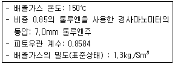
- 8.3m/s
- 9.4m/s
- 10.1m/s
- 11.8m/s
(정답률: 50%)
80. 환경대기 중 아황산가스 농도 측정을 위한 불꽃광도법(FPD)에 관한 설명으로 틀린 것은?
- 황화합물의 농도가 아황산가스 농도의 5% 이상일 때는 적당한 전처리를 하여 방해물질 제거 후에 측정한다.
- 측정범위는 0.0⑤ - 1.0ppm 이다.
- 순도 99.8% 이상의 수소 또는 수소발생기를 사용한다.
- 재현성은 각 측정단계마다 최대눈금 값의 ±5% 이내이어야 한다.
(정답률: 65%)
5과목: 대기환경관계법규
81. 대기환경보전법규상 LPG 자동차의 자동차연료 제조기준 항목 중 황의 함량기준은? (단, 2008년 12월 31일 까지 적용)
- 50ppm이하
- 100ppm이하
- 125ppm이하
- 150ppm이하
(정답률: 42%)
82. 대기환경보전법규상 대기오염물질 배출시설에 해당하지 않는 것은?( 단, 금속의 용융ㆍ제련 또는 열처리 시설)
- 시간당 300킬로와트 이상인 전기아크로(유도로를 포함)
- 1회 주입 연료 및 원료량의 합계가 0.5톤 이상인 용선로
- 1회 주입 원료량이 0.5톤 이상이거나 연료사용량이 시간당 30킬로그램 이상인 도가니로
- 노상면적이 3제곱미터 이상인 반사로
(정답률: 50%)
83. 대기환경보전법규상 가스형태의 물질 중 소각용량이 시간당 2톤(감염성(의료)폐기물 처리시설은 시간당 200kg)이상인 소각시설 또는 소각보일러의 일산화탄소 배출허용기준(ppm)은?
- 30(12) 이하
- 50(12) 이하
- 200(12) 이하
- 300(12) 이하
(정답률: 80%)
84. 대기환경보전법규상 환경부장관이 특정대기유해물질 배출시설 또는 특별대책 지역에서의 배출시설의 설치를 제한할 수 있는 경우에 관한 기준이다. ( )안에 알맞은 것은?
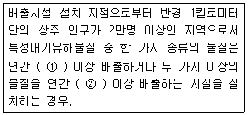
- ① 5톤, ② 10톤
- ① 5톤, ② 20톤
- ① 10톤, ② 20톤
- ① 10톤, ② 25톤
(정답률: 79%)
85. 대기환경보전법규상 먼지ㆍ황산화물 및 질소산화물의 연간 발생량 합계가 7톤인 시설의 자가측정횟수 기준은? (단, 특정대기유해물질이 함유되지 않은 대기오염배출시설로서 배출허용기준이 적용되는 대기오염물질에 한하며, 비산먼지는 제외한다.)
- 매주 1회 이상
- 반기마다 1회 이상
- 2월마다 1회 이상
- 매월 2회 이상
(정답률: 38%)
86. 악취방지법규상 다음 지정악취물질의 배출허용기준으로 틀린 것은?
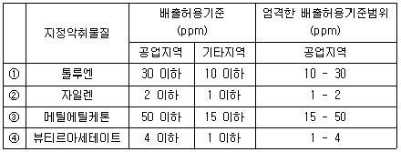
- ①
- ②
- ③
- ④
(정답률: 63%)
87. 대기환경보전법규상 선박의 배출허용기준이다. ( ① )안에 알맞은 것은?
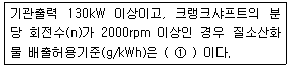
- 17 이하
- 45.0 × n (-0.2)
- 9.8 이하
- 4.1 이하
(정답률: 59%)
88. 대기환경보전법규상 비산먼지 발생을 억제하기 위한 시설의 설치 및 필요한 조치중 야적(분체상 물질을 야적하는 경우에만 해당한다.)에 관한 기준으로 옳지 않은 것은? (단, 예외사항은 제외)
- 야적물질을 1일 이상 보관하는 경우 방진덮개로 덮을 것
- 야적물질로 인한 비산먼지 발생억제를 위하여 물을 뿌리는 시설을 설치할 것(고철야적장과 수용성물질 등의 경우는 제외한다.)
- 야적물질 최고저장높이의 1/3 이상의 방진벽을 설치할 것.
- 야적물질 최고저장높이의 1/2 이상의 방진망을 설치할 것
(정답률: 54%)
89. 환경정책기본법령상 이산화질소(NO2)의 대기환경기준은? (단, 24시간 평균치 기준)
- 0.03ppm 이하
- 0.⑤ppm 이하
- 0.06ppm 이하
- 0.10ppm 이하
(정답률: 56%)
90. 다중이용시설 등의 실내공기질 관리법규상 오염물질방출 건축자재 기준이다. ( )안에 알맞은 것은? (단, 단위는 mg/m2ㆍh 이고, 일반자재는 벽지, 도장재, 바닥재, 목재 및 그 밖에 건축물 내부에 사용되는 건축자재를 말하며, 휘발성유기화합물은 총휘발성유기화합물을 말한다.)
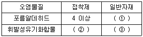
- ① 1 이상, ② 10 이상, ③ 5 이상
- ① 1.25 이상, ② 4 이상, ③ 5 이상
- ① 1.25 이상, ② 10 이상, ③ 4 이상
- ① 1 이상, ② 4 이상, ③ 4 이상
(정답률: 64%)
91. 대기환경보전법규상 대기오염경보단계중 중대경보의 발령기준으로 옳은 것은? (단, 오존농도는 1시간 평균농도를 기준으로 한다.)
- 기상조건 등을 검토하여 해당 지역의 대기자동측정소 오존농도가 0.12피피엠 이상일 때
- 기상조건 등을 검토하여 해당 지역의 대기자동측정소 오존농도가 0.15피피엠 이상일 때
- 기상조건 등을 검토하여 해당 지역의 대기자동측정소 오존농도가 0.3피피엠 이상일 때
- 기상조건 등을 검토하여 해당 지역의 대기자동측정소 오존농도가 0.5피피엠 이상일 때
(정답률: 63%)
92. 대기환경보전법규상 배출시설 및 방지시설과 관련된 1차 행정처분기준이 조업정지에 해당하는 경우가 아닌 것은?
- 배출허용기준을 초과하여 개선명령을 받은 자가 개선명령을 이행하지 아니한 경우.
- 방지시설을 설치하여야 하는 자가 방지시설을 설치하지 아니하고 배출시설을 운영하는 경우.
- 방지시설을 임의로 철거한 경우.
- 배출시설 가동개시 신고를 하여야 하는 자가 가동개시 신고를 하지 아니하고 조업하는 경우
(정답률: 29%)
93. 대기환경보전법규상 조치명령 또는 개선명령을 받지 아니한 사업자의 개선계획서의 제출에 관한 사항이다. ( ① )안에 알맞은 것은?
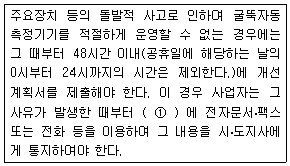
- 8시간 이내
- 12시간 이내
- 24시간 이내
- 48시간 이내
(정답률: 28%)
94. 대기환경보전법규상 위임업무 보고사항 중 보고횟수가 연1회 인 것은?
- 첨가제의 제조기준 적합여부 검사현황
- 배출시설 및 방지시설의 정상운영여부 확인기기 부착업소와 행정처분현황
- 휘발성유기화합물 배출시설 설치 신고 현황
- 수입자동차 배출가스 인증 및 검사현황
(정답률: 48%)
95. 악취방지법규상 악취검사기관의 준수사항이다. ( )안에 가장 알맞은 것은?
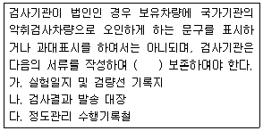
- 1년간
- 2년간
- 3년간
- 5년간
(정답률: 75%)
96. 대기환경보전법규상 대기환경 규제지역을 관할하는 시ㆍ도지사가 수립하는 실천계획에 포함되는 사항으로 가장 거리가 먼 것은?
- 대기보전을 위한 투자계획과 대기오염물질 저감효과를 고려한 경제성평가
- 대기오염물질 방지대책 선정을 위한 주민여론 수렴현황
- 대기오염원별 대기오염물질 저감계획 및 계획의 시행을 위한 수단.
- 계획달성연도의 대기질 예측 결과
(정답률: 75%)
97. 대기환경보전법상 배출가스저감장치의 인증을 받아야 하는 자가 인증을 받지 아니하고 배출가스저감장치와 저공해엔진을 제조하거나 공급ㆍ판매한 자에 대한 벌칙기준은?
- 7년 이하의 징역이나 1억원 이하의 벌금
- 5년 이하의 징역이나 3천만원 이하의 벌금
- 2년 이하의 징역이나 1천 5백만원 이하의 벌금
- 1년 이하의 징역이나 5백만원 이하의 벌금
(정답률: 59%)
98. 악취방지법규상 지정악취물질 중 적용 시기가 다른 것은?
- 뷰티르알데하이드
- 다이메틸다이설파이드
- 프로피온산
- I - 발레르알데하이드
(정답률: 46%)
99. 대기환경보전법규상 '대기오염도 검사기관'과 거리가 먼 것은?
- 수도권대기환경청
- 환경보전협회
- 환경관리공단
- 낙동강유역환경청
(정답률: 65%)
100. 대기환경보전법령상 개선계획서를 제출하지 아니한 사업자의 오염물질 초과부과금 위반횟수별 부과계수 비율기준으로 옳은 것은?
- 처음 위반한 경우에는 100/100
- 처음 위반한 경우에는 1⑤/100
- 처음 위반한 경우에는 110/100
- 처음 위반한 경우에는 120/100
(정답률: 69%)
대기의 건조단열체감율은 고도가 증가함에 따라 온도가 1℃씩 감소하는 것을 의미하며, 표준체감율은 국제적인 약속에 따라 중위도 지방을 기준으로 한 실제체감온도를 나타낸다.
이 둘은 대체로 비슷한 경향성을 보이지만, 대기의 상황에 따라 차이가 발생할 수 있다. 따라서 이 둘을 비교하기 위해서는 대기의 상황을 고려해야 한다.
위의 도식화에서는 고도가 증가함에 따라 건조단열체감율은 일정하게 감소하지만, 표준체감율은 일정한 경사로 감소하는 것을 보여준다. 이는 대기의 상황에 따라 표준체감율이 건조단열체감율보다 더 빠르게 감소할 수 있기 때문이다.
따라서 이 도식화는 대기의 상황을 고려한 비교를 보여주고 있으며, 이를 통해 건조단열체감율과 표준체감율의 차이를 이해할 수 있다.